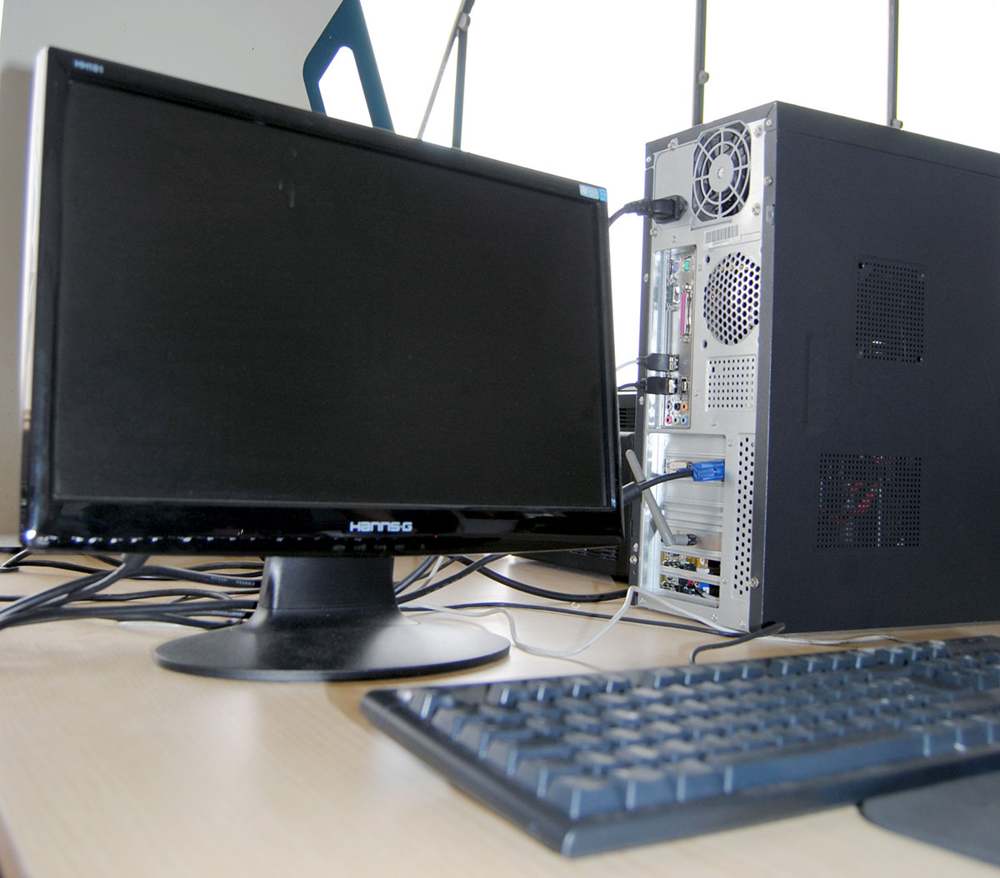
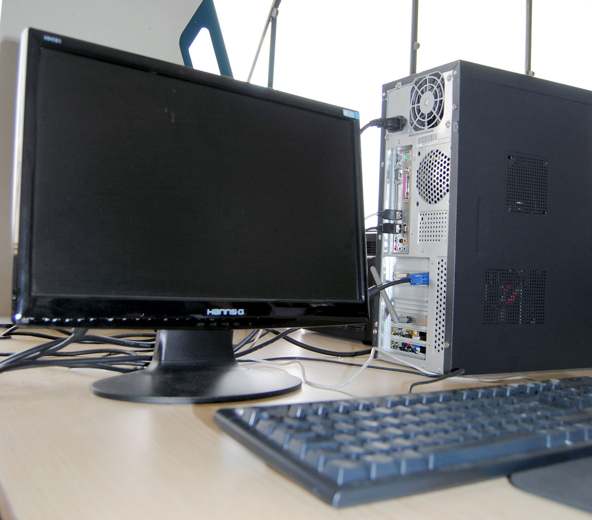
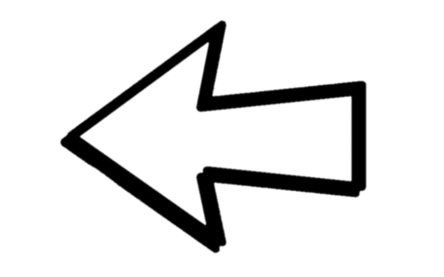
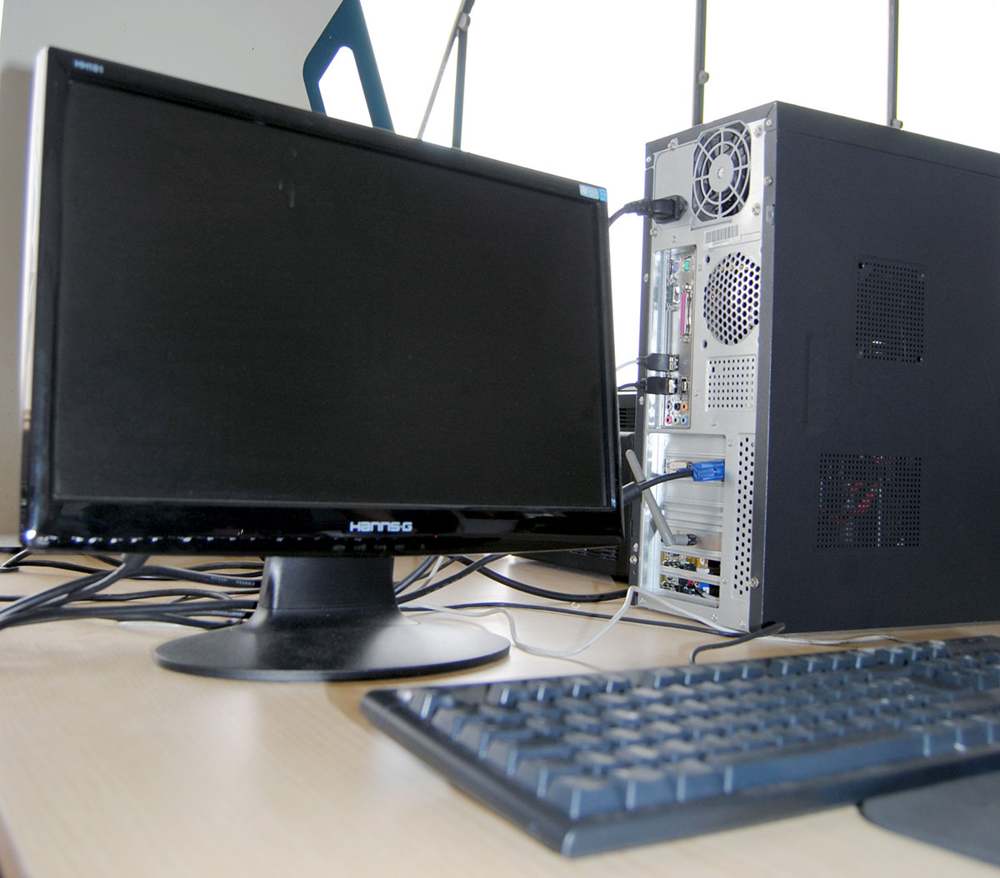

Passo 12
 

Collegamento alla rete elettrica e test finale. Il PC è stato collegato all’alimentazione, al monitor e alla tastiera: è pronto per essere testato.
Sul video la schermata del BIOS.


Collegamento alla rete elettrica e test finale. Il PC è stato collegato all’alimentazione, al monitor e alla tastiera: è pronto per essere testato.
Sul video la schermata del BIOS.